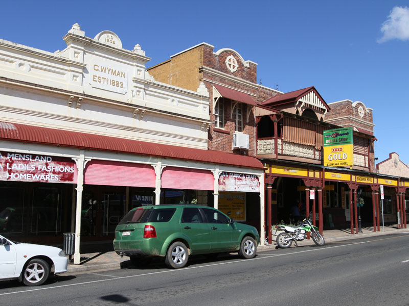
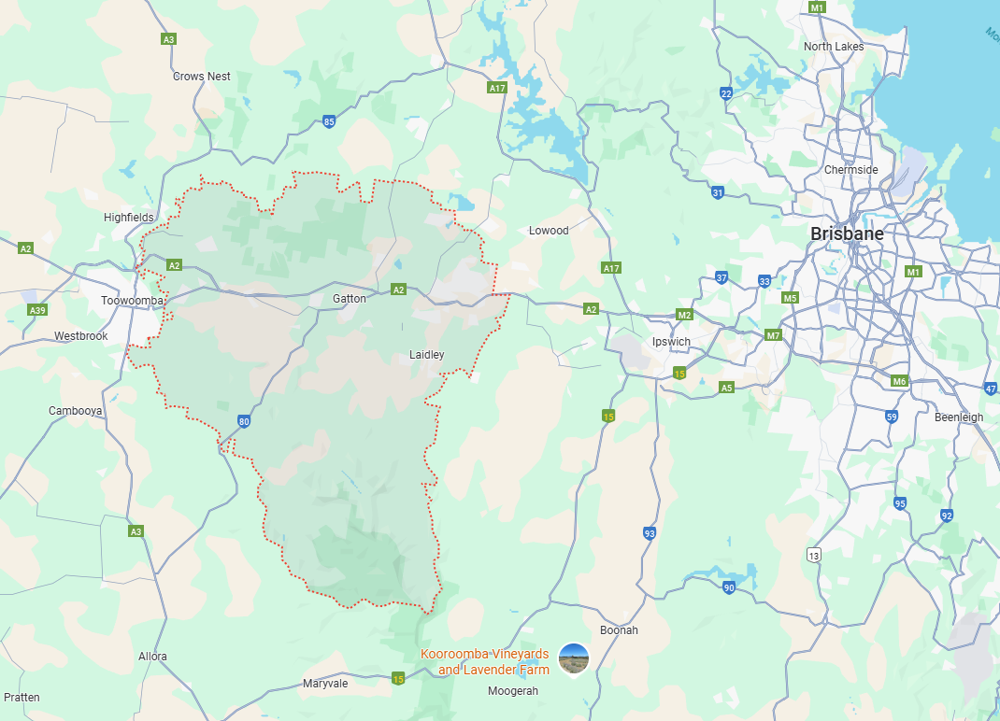

Laidley
suburbs

- Median house price: $531,788
- Annual growth: 17.4%
- Rental yield (houses): 4.95%
- Median weekly rent: $500
The Lockyer Valley is a local government area in the West Moreton region of Southeast Queensland.
The Lockyer Valley produces around 40% of Queensland's fresh vegetables.
Affectionately known as Australia’s Salad Bowl, the Lockyer Valley blends diverse, thriving agriculture with the convenience of being less than two hours from Brisbane.
This perfect balance of town and country living fuels the Lockyer Valley's strong ongoing exciting growth.
Our Suburbs:
We've highlighted a selection of suburbs across the Lockyer Valley to showcase the region's consistent and seemingly sustainable growth. This strength is reinforced by the Valley's reputation as Queensland's food bowl, producing around 40% of the state's fresh produce. With food security and supply now high on government agendas both nationally and internationally, the Lockyer Valley is well positioned for continued and long-term demand.